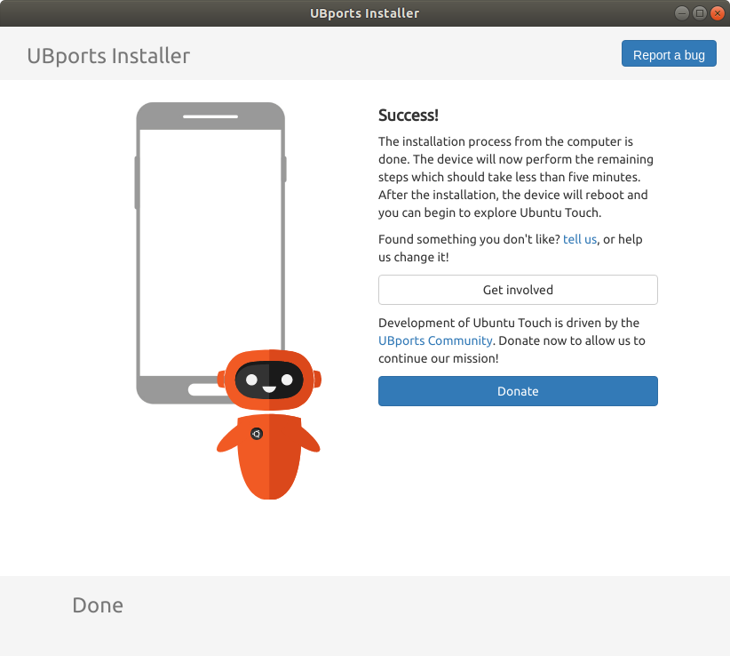
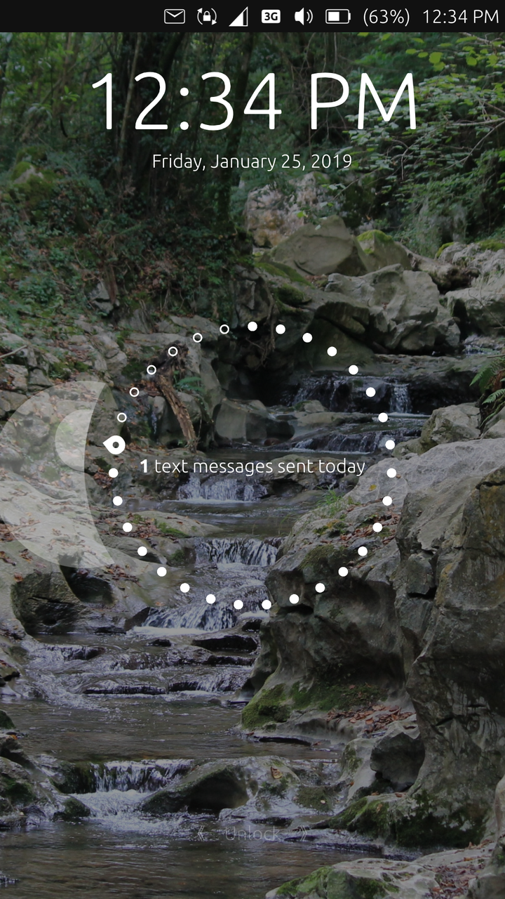

Back to Ubuntu Touch!
Over the last month, I thought about buying a new phone and the thought process was this:
The phone must be/have:
- A non-Samsung or iPhone While they are best of the best, they are just over advertised. Plus, they cost above my pay rate.
- Privacy, please It's something that we have, as a whole, thrown away. Also, that FaceTime bug is scary.
- It needs to be simple I'm still leaning on using my computer for my work. I only use my phone to make calls, text, and check my e-mail and Twitter.
- It needs to be rootable What if I want to switch back to Android? Plus, how would I of switched to Ubuntu Touch in the first place? If I were to switch back to Android, I would use the stock ROM- no need for bloat-ware.
I decided to buy a Nexus 5 and put Ubuntu Touch on it. I used to have a Nexus 4, but it was water damaged. I bought it because I wanted a bigger screen although I think based on the usage, the Nexus 4 would of worked.
Review
I don't recall if I wrote a proper review on Ubuntu Touch, but I will here. Like as I said I don't really use my phone and I will not be reviewing the convergence part.
Installation
Installation was much easier after Ubports took over the project because they added a GUI method to flashing Ubuntu Touch on devices. The the only problem that I found is that Nexus 5 wasn't found automatically. Luckily, the installer has a manual selection.


System
Overall, it's a nice and stable system. I don't see any major changes from when I last used it. The one thing that I love is the fact you can respond to messages from the indicator menu. The only bad thing is that the Weather app doesn't work outside the box. You will have to update it from the Ubuntu Open Store.
Apps
The Apps I have on my Ubuntu Touch are:
- Base, pre-installed apps minus Notes I don't use Evernote but I may need a basic noting taking app. The others are needed for everyday life.
- Active Screen It replaces the "always on while charging" setting from Android. I may have use for it, but I don't yet.
- Circle Message It's there for motivation.
- Morph Browser While it's one of the base, pre-installed apps, it the most powerful app on the Ubuntu Touch. Most of the apps that I used on my Samsung Galaxy Edge are web-based apps, such as Twitter and e-mail.
- Talaan It's a pretty good check-list app.
- UT Tweak Tool Because there are some settings that aren't found the system settings, such as turning off the launcher.
Other
My lockscreen looks like this:
